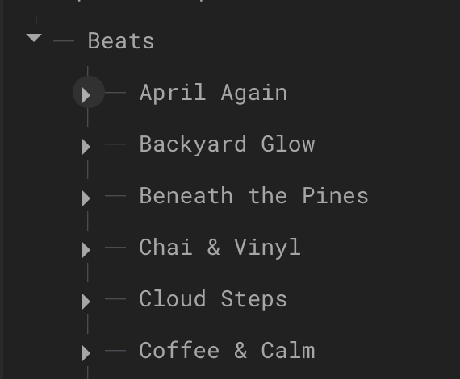

About Whispurrs
Whispurrs is a cozy space for lo-fi beat lovers and those wanting to create a clear mental headspace for concentration. Users can immerse yourself in chill beats, create your own playlists, and even upload your own creations with others. This app is designed with aesthictics in mind. Whispurrs is meant to brung you a blend of sound and vibe. Its perfect for studying, working, or just relaxing.
Designed by yours truly, Sumayya M. ᵕ̈
Frontend Design Process
This application really puts empahsis on the design and aesthictics of itself. The process started off with just a list of potential screens. Very base level like creating account or logging in. And other basic music screens such as a library of songs, a music player at the bottom or a screen where users can create and retrieve playlists.
To bring the screens to life I decided to use Figma in order to gain new design skills and become familer with UI/UX applications.
Firstly I needed a good color scheme, something unique thats pops out but isnt too overwhelming.
Every good app needs its mascot. with the name in mind I decided to make my cat that apps logo. (He's Orange and his names Simba). I used the PiskelApp inorder to create a pixel art of a cat and animate it into a gif.
Then comes another important factor --- the font. Based off the pixelated cartoons a made, it only makes sense to a pixelated font
Pixelify Sans Medium
After curating our skeleton, now its time to actually put together the screens. using the original list of screens I started designing all the views in Figma.
In the future using figma pays off significantly when fixing minor UI/UX objects since you just have to put in the same measurements from figma to set it up
Backend Design Process
While take Objects and Design (CS2340) class at GaTech, I was taught some important tech stacks to build my applications. I used the same one I used to create my group project from this class, Firebase. I already had some experience working with firebase so I decided to stick with it. I used the realtime database to store all the beats and firestore so users are able to curate their own playlists.
***In order to host my songs in selected song gifs, I used Netlify.
App UI Screenshots
App Views
Create Account
Login
Beats Library
Playlists
Upload Songs
Selected Song
Reflections
Because this was my first fully individual app ive built based off all that ive learned, there are some bad coding practices ive had to keep. One great example is code repitition for slightly different screens
To expand this application I could use any availible AI music model and use it's API and create a way for users to create their own new beats.
This application also has alot of potential to be scalable as I made sure not to hard code anything relating to data reading and writing.